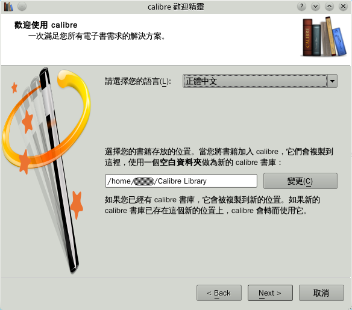
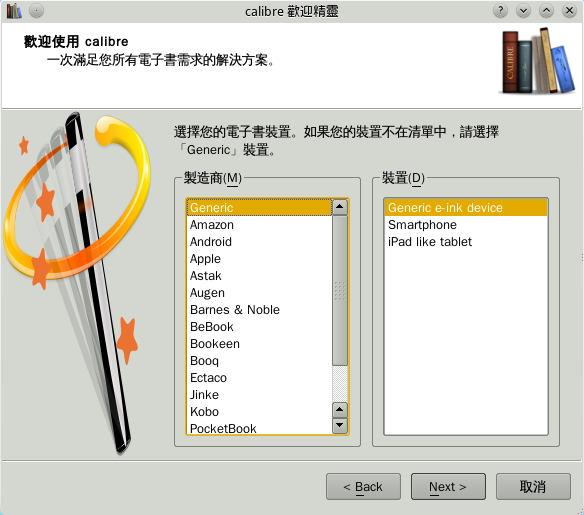
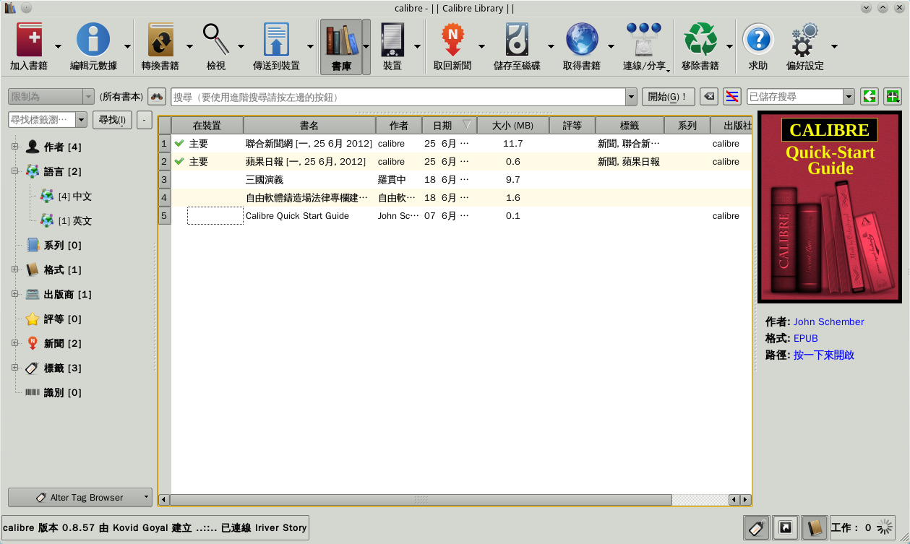
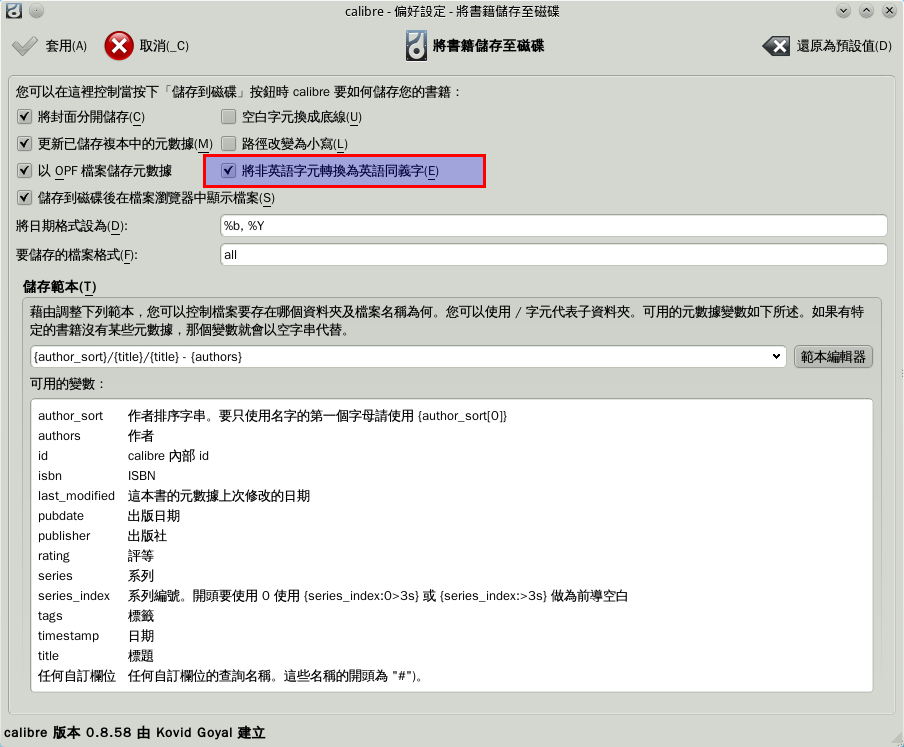
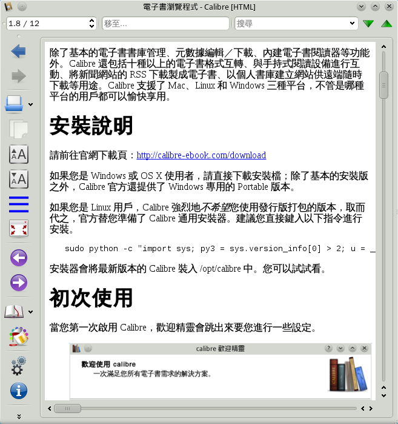
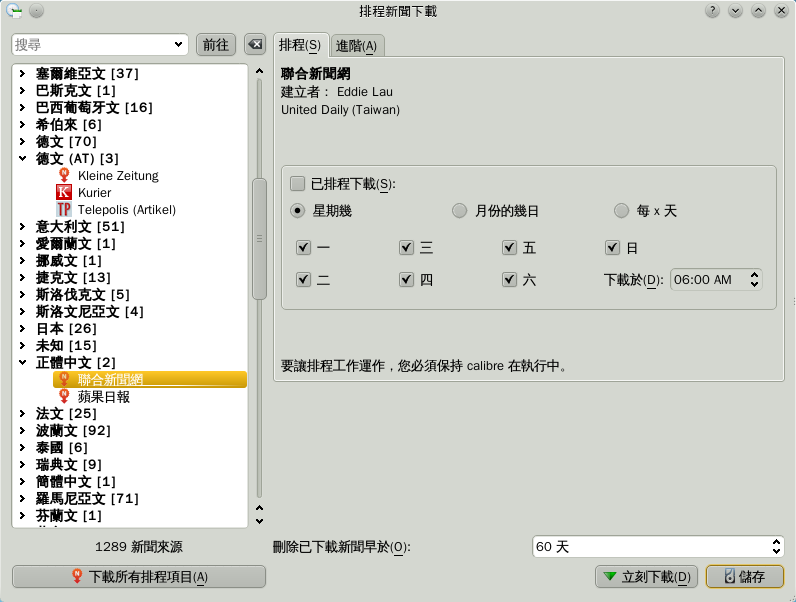

也紀念我們永遠的朋友 李士傑先生（Shih-Chieh Ilya Li）。
Calibre－萬用的電子書管理軟體
簡介
Calibre 是一款功能異常齊全，且自由開源的電子書管理軟體。
除了基本的電子書書庫管理、元數據編輯／下載、內建電子書閱讀器等用途外。Calibre 還內置了十種以上的電子書格式互轉、與手持閱讀設備進行互動、將新聞網站的 RSS 供稿製成電子書、個人書庫遠端分享等功能。運行方面，Calibre 支援了 Mac、Linux 和 Windows 三種平台，不管哪種平台的用戶都可以愉快享用。
安裝說明
如果您是 Windows 或 OS X 使用者，請直接前往官網下載頁 (https://calibre-ebook.com/download) 下載安裝檔；對於 Windows 用戶來說，除了普通安裝版之外，Calibre 官方還提供了 Windows 專用的可攜帶版本。
對於 Linux 用戶，Calibre 強烈地不建議您使用發行版打包的版本，取而代之，官方替 Linux 用戶準備了專屬的安裝器，您可以開啟終端機後直接鍵入以下指令進行安裝：
sudo python -c "import sys; py3 = sys.version_info[0] > 2; u = __import__('urllib.request' if py3 else 'urllib', fromlist=1); exec(u.urlopen('https://status.calibre-ebook.com/linux_installer').read()); main()"
安裝器會將最新版本的 Calibre 裝入 /opt/calibre 中。請務必試試看。
初次使用
第一次啟用 Calibre 時，歡迎精靈會跳出來，請您進行一些設定。
▲ 圖1：歡迎精靈第一頁
當您見到歡迎精靈後，請選擇介面語言及書籍資料的儲存位置。
Calibre 會將它管理的書籍通通放在您指定的位置下。如果有很多書要收納，請確定該位置有足夠的儲存空間。此外，日後也請儘量不要「手動」操作這個目錄，否則可能會讓 Calibre 內部的元數據資料庫損壞。（這可以修，但總是麻煩。）
▲ 圖2：歡迎精靈第二頁
歡迎精靈的第二頁會讓使用者選擇手持閱讀裝置。
如果您沒有手持裝置，直接按 Next 跳過這步就可以了；如果您有裝置，但在 Calibre 中偏偏找不到匹配項目，請選用「Generic」中的「通用裝置」，Calibre 通常也能運作得很不錯。
若您想再次執行精靈，請在主畫面中按下【偏好設定】→【執行歡迎精靈】按鈕。
介面總覽
歡迎精靈離去後，會跳出 Calibre 的主介面。
▲ 圖3：Calibre 的介面，功能很多。作者第一次面對時還頗恐慌的……
Calibre 的介面佈局和一般程式不太相同，乍看有些嚇人。不過別被唬住了！在正式使用 Calibre 之前，我會幫大家簡單地導覽過一遍。
就從按鈕列開始吧。
按鈕列
▲ 圖4：按鈕列
按鈕列位在主視窗的最上方，佔去介面中相當大的一塊。而在 Calibre 中它的地位也確實很重要。
事實上，在 Calibre 中絕大多數的功能，都必須要透過這些按鈕才能使用。除此之外，按鈕旁邊的【ˇ】符號還可以叫出額外選項，提供進一步操作。
【傳送到裝置】與【裝置】兩顆按鈕，只有當電腦連上手持式閱讀設備後才會出現，若您發現您的介面中沒有他們，請不用擔心這個。
查找電子書
主介面中，有兩大部份可以協助使用者從茫茫書庫中翻出想要的書。那就是「搜尋列」和「標籤過濾器」。
▲ 圖5：搜尋列

▲ 圖6：標籤過濾器
搜尋列位在按鈕列的正下方，而過濾器則被放在主介面的最左邊位置上。
搜尋列可讓使用者搜索任何書籍的元數據。您可以把字串拋進去撈資料，也可以透過 title:xxx 或 author:yyy 搜索特定的元數據欄位，甚至使用 and、or、not 這類指令進行邏輯查找。如果您對這方面細節有興趣，可以參看官方手冊的這一部份：https://manual.calibre-ebook.com/gui.html#the-search-interface
過濾器的運作方式和搜尋列相似，只不過您不需要打字。取而代之，點擊某個作者、出版商、格式或自訂標籤，過濾器就會自動將搜索參數拋進搜尋列中。您可以用 Ctrl 或 Shift 鍵，同時指定多個值進行搜尋。
書籍選擇與書籍資料

▲ 圖7：書籍檢視器
正中央的大檢視器會顯示出您目前搜到的書籍（如果您沒有進行搜尋，那就是全部的書籍）。您可以在上方欄位點擊，讓書籍依特定欄位進行排序，以便翻找。此外，要是覺得上方的欄位排序不合己意，又或是太多太亂，也可去【偏好設定】→【加入您自己的欄】項目中進行修改。
一旦您選擇了一本書，右側的「書籍詳細資料」窗格就會隨之更新。

▲ 圖8：書籍詳細資料窗格
書籍詳細資料窗格預設會顯示很多東西。那包括書籍的封面、作者、格式、路徑與註解等等。
要顯示哪些資料，或是改變資料顯示順序，可以在【偏好設定】→【外觀與感覺】→【書籍詳細資料】中進行修改。
底部狀態列
最後介紹的是底部狀態列。

▲ 圖9：底部狀態列
狀態列的左邊提示了目前與手持設備的連接狀況，與當前軟體版本。
右邊有三個按鈕。請立刻按按看！那是可以方便切換某些窗格的開關。
按鈕右側的「工作：0」，是 Calibre 目前有多少背景工作正在進行的提示。當使用者要求 Calibre 進行轉檔或下載等需時較長的工作時，這裡的數字就會增加。在「工作」上面點滑鼠，可以得到更多與當前工作相關的訊息。
匯入與匯出電子書
Calibre 是一款電子書管理軟體。想使用它，第一個步驟當然是得匯入一些電子書啦。
不過請稍等一下，在實際匯入之前，強烈建議各位前往【偏好設定】→【將書籍儲存至磁碟】看看。
▲ 圖10：將書籍儲存至磁碟的設定畫面
【將非英語字元轉為英語同義字】這項，請斟酌看看要不要取消打勾。若希望中文書的檔名使用中文字，在匯入之前就就得將這個勾勾取消，否則檔名就會轉為拼音。當然如果不在意這個，放著不管也沒關係啦。
匯入
終於可以開始匯入了。
要將電子書匯入 Calibre 中，最簡單的方式就是直接將電書檔案拖放到 Calibre 介面上，Calibre 會自動分析電子書的元數據，進度條跑完後就算匯入成功。您也可以一次拖入多本電子書，Calibre 會將所有的電子書都正確匯入。
若是有一堆電子書檔案被散亂地放在不同的子資料夾中，拖曳不方便，則可以改用【加入書籍v】→【從目錄加入書籍……】的按鈕，一次性匯入指定目錄與子目錄下的所有書籍。
若打算匯入的電子書在書庫中已經存在，而使用者又重複匯入，Calibre 預設會跳出警告視窗，問您要不要強行加入它，若選「加入」，則會讓它成為「一本書名重複的新書」－若您對這樣的預設行為不滿，想要用新書更新舊書，又或是不詢問直接行動，則可以去【偏好設定】→【加入書籍】中進行調整。
儲存至磁碟
書籍被塞進書庫之後，若想把檔案重新取出來，可以使用【儲存至磁碟】這個按鈕。
- 首先選擇要匯出的書籍。
- 按下【儲存至磁碟】。
- 選擇儲存位置。
這樣操作後，指定的書籍就會以目錄的形式出現在您所指定的儲存位置上。目錄中會包含該書所有格式的檔案及元數據資料。
（若使用【儲存至磁碟】按鈕，也能選擇只匯出特定格式的檔案。）
如果一次選擇了多本書，也可以進行大量匯出。
與手持閱讀器互動
除了「匯出成檔案」後，交給使用者手動處理之外，Calibre 也能直接將電書轉到手持設備上。
總之，先讓手持設備與電腦連線（舉例：插上 usb），接著不用進行任何操作。如果 Calibre 能識別該閱讀器，主畫面左下角就會出現您目前的設備名稱（參考圖9）。
您可以選擇想要傳送的書籍，然後按下【傳送到裝置】按鈕。倘若某本書已經傳送過了，在主畫面中會被打勾標示。
手持裝置中現有的書，您可以按【裝置】按鈕進入取得列表。若想將裝置中的書匯入書庫，也可以選擇書本後按右鍵叫出選單，進行匯入操作。
基本功能總算講完了，接下來看些別的吧！
在電腦上瀏覽電子書
一般來說，電子書是專為了手持式閱讀器而設計的，但若真想在自己的電腦上閱讀電子書，Calibre 也能做到。
請簡單地在書目上連點。Calibre 會依照您系統設定，針對不同書籍格式呼叫不同的閱讀程式。如果沒有特別校調的話，這應該會是 Calibre 內建的 ebook-viewer。（世界上有不少冠名為 ebook-viewer 的軟體，此處特指 calibre 內建的這款）
▲ 圖11：Calibre 內建的 ebook-viewer 閱讀程式
儘管只是附屬的小程式，ebook-viewer 還是挺好用的，而且可以在不開啟 Calibre 主程式的狀況下獨立執行。他可以打開多種格式的電子書，作者測試包括 epub、pdf、mobi、updb、pdb、prc、txt、html 都能支援，不過支援度就各有千秋了。基於 html 的格式包括 epub、mobi 等效果都很不錯，至於 pdf 就悽慘了些，那東西還是用 pdf 閱讀器比較好讀……
介面左側有一排按鈕，提供使用者放大、縮小、設為全螢幕、目錄、書籤與檢視元數據等功能。當您離開 ebook-viewer 時，程式也會自動記錄您當前閱讀到第幾頁，日後再打開時就會自動回到之前的位置。
ebook-viewer 還支援使用者樣式表－要是對畫面排版不滿意，只要會一些 CSS 碼，就能將書籍格式輕易重排成自己滿意的樣子。
替電子書轉換格式
Calibre 最引人注目的特色，恐怕是在各種電子書格式間進行轉檔了。您可以把一本 txt 轉成 epub，或是把 pdf 改造成 mobi，讓書在各種閱讀器中都能被順利讀取！
做法如下：
- 選擇書庫中已有的電子書。
- 點擊【轉換書籍】按鈕。
- 選擇輸入格式與輸出格式。並進行各種細部設定後，按下確定按鈕。

▲ 圖12：轉換畫面
一旦您按下【轉換書籍】按鈕，轉換畫面就會跳出來。如上圖所示。
首先您必須選擇您希望產生的書籍格式（在右上角）。此外如果有必要，您也必須決定書籍的輸入格式（在左上角）。
指定輸入格式等同於規定轉換使用的資料來源，比方說 txt 中不會有隱式超連結，也不會預先儲存目錄結構。原始資料中沒有的東西，Calibre 也很難知道該如何產生它。此外，不同格式的轉檔效果也略有差異，如果您有多個原始格式，可以多嘗試用不同的來源轉檔看看，看哪個最終效果最好。
當然若您的書只有一種格式，就沒得選了。
視窗左側的標籤能讓使用者切換分頁，每個分頁都有大量可供人設定的東西。
元數據指定書籍的作者、封面、書名等訊息。Calibre 會盡其所能地幫您將這些元數據給事先填好，然而若有什麼欄位不滿意，也可以手動修改、刪除與追加。
外觀感覺對電子書的顯示參數進行效調。包括設定字型大小、編碼、行高、左右對齊、CSS 等。
啟發式處理指定讓 Calibre 在轉換時進行某些「猜測」工作。這往往是用在輸入格式的語義表述並不明確，但又想要轉出特定效果的時候。這些功能並不可靠，預設都是停用的，請斟酌使用它們。
頁面設定只要選擇想要使用的閱讀設備就可以了。
結構偵測用額外條件來進行章節切分。
目錄頁設定書籍目錄的產生方式。
搜尋 & 取代在建立書籍的過程中，自動化地刪改、替換某些文字。
XXX 輸入與 YYY 輸出用某些格式輸入輸出時，Calibre 會提供一些特別的項目給使用者調整。這些格式特有的選項一律會被獨立出來，放在這邊。
個別分頁中能設定的項目實在太多太雜，就不一一介紹了。順便一提，將滑鼠游標指在設定項目上，會出現很詳盡的說明，而且幾乎都有中文翻譯，非常方便值得多多參考。
網路功能
將新聞製作成電子書
Calibre 可以利用新聞網站的 RSS 製作電子書。
▲ 圖13：排程新聞下載
一旦使用者按下面板上的【取回新聞】按鈕，就會跳出圖 13 的選擇框，接著請選出您要的新聞，Calibre 會對該網站提供的新聞進行下載，並全自動地將新聞包裝成電子書，而且還會把今日新聞自動上傳到當前連結的閱讀器中。
此外，使用者也可以指定 Calibre 每日定時自動打包新的新聞。
除了預設的新聞網站以外，Calibre 也允許使用者自行新增新聞來源。不過這部份功能比較複雜，我也沒鑽太深。若哪位有興趣了解可透過留言功能討論一下。
遠端分享
不見得是分享給別人，分享給自己的手持設備也沒問題！
書庫伺服器Calibre 可將您的書庫放到網路上，透過網頁介面供人從遠端取用。當然如果您不願意（或受限於法律，不能）與旁人分享您的書庫，您也可以加上密碼。

▲ 圖14：「透過網路分享」設定畫面
設定方式很簡單：請點【偏好設定】→【透過網路分享】→【啟動伺服器】……這樣就行了。
比較重要的設定還有：
- 如果希望 Calibre 能夠自動啟動伺服器的話，請把「當 calibre 啟動時自動執行伺服器」給打勾。
- 看您想不想要設定帳號密碼，也在這邊設定。
- 請注意預設的連接埠是 8080，您必須要在網址列上明確指定連結埠如 https://127.0.0.1:8080 這樣，才能正確存取它。
您可以按【測試伺服器】來檢查看看網頁內容有沒有正確顯示。
▲ 圖15：Calibre 書庫伺服器的網頁畫面。雖然不難看，但似乎完全無法修改與自訂。
透過電子郵件分享書籍自建伺服器雖然豪華，不過必須要有固定 IP 與不關機的家庭伺服器才能真正拿來用。不過別擔心，喜歡節能減碳的窮人如我，也可以用電子郵件分享書籍到手持設備中。

▲ 圖16：「以電子郵件分享書籍」視窗
從【偏好設定】→【以電子郵件分享書籍】打開圖16 的設定視窗，接著按下右邊的【加入電子郵件】，依照圖示說明，打入上下兩個郵箱地址就完成了。
calibre 並不需要使用其他信箱的外寄郵件伺服器，它自己就能寄信。
日後要透過電子郵件傳送電子書，只要先選擇想要傳送的書籍，然後按下主介面中的【連線／分享v】→【寄電子郵件到……】，就能將電子書以附件型式寄到指定的信箱中。
後記
Calibre 是一款強大、充滿彈性，而且堆滿成山功能的複雜軟體。它還有更多隱藏著的特色本文並沒能介紹到。那包括豐富的外掛程式、自訂化搜尋功能、強大的元數據下載／編輯器、網路電子書搜索等等……這些功能都相當地有份量。
直到目前為止，Calibre 的開發節奏依然相當快且活躍，而使用者也很多。據官網的統計，截至 2012 年 7 月，Calibre 的使用者已經達到九百萬人以上。
Calibre 的未來，應該會是相當值得期待的。
參考資料
- Calibre 使用手冊：https://manual.calibre-ebook.com/
專欄總覽


E-Mail：contact@openfoundry.org Address：台北市南港區研究院路2段128號 中央研究院資訊科學研究所 . 隱私權條款. 使用條款

評論
列出所有電子書的 書名、作者、出版社、版次....等資訊，
然後可以用EXCEL檔或是TX T檔輸出，
請問有這個功能嗎？
謝謝
試試看這招：
1. 在 calibre 主畫面中，全選所有書籍。
2. 叫出右鍵選單，選擇【轉換】->【在您的 calibre 書庫中建立書籍的分類】
3. 分類格式選 CSV 。
4. 去【CSV/XML 選項】標籤頁中，確認要匯出的欄 位。
5. 按確定，選擇存檔位置。
就這樣咩。CSV 檔 Excel 能開，看看開出來的東西是不是您 想要的？
將html轉成epub,用手持 電子閱讀器讀,不會顯示頁碼--第?頁/總頁數,請問頁碼如何顯示,回我 mail好嗎suiesqui@ gmail.com
謝謝
關於您的問題，我想這多半不是 Calibre 或手持裝置出了什麼差錯，而是說 Epub 本身就沒有「頁」的概念。
比起 pdf，Epub 更像是普通的「網頁」。
如果 Epub 閱讀軟體的畫面中放不下一個完整 的 Epub 網頁，那它確實會分頁，但頁數究 竟有幾頁，卻不是由書籍的編輯事 先決定的，而是和瀏覽器大小，及 使用者的個人設定有關。
這就是為什麼 pdf 格式的電子書，看起來似乎總是比 epub 格式電子書好看的原因。因為 pdf 格式的電子書，每一頁的規格、字 數、插圖位置、字體比例都是透過 美編手工調整出來的最佳設計。每 頁都像圖片一樣精美。
但反過來說，就因為 pdf 排版固定，所以如果製作書籍的人 是基於 A4 印刷規格設計這本書，每行有四十 個字，而您卻把它拿在4吋手機上 看，想當然爾那時候您的眼睛就會 很痛苦。而 Epub 則可以讓文字與圖片動態地流動， 自行調整排版，適應各種閱讀場合 。如果讀者是個眼睛不好的老先生 ，可以指定將字體加大縮小；如果 讀者嫌頁寬太寬或太窄，也可以輕 易地自行調節。
您或許可以這樣理解：Epub 犧牲掉完美換來相對良好的適應性 ，pdf 則是犧牲適應性，換來在某種條件 下的完美表現。
請問我是否可以在一本epub電 子書中，包含兩個主要主題，每個 主題，都有他的大標題，這樣包含 目錄結構的電子書?
簡單的問，我如何設定一個TXT 中的大標題與次標題，以及如何讓 這主次標題，於epub中，具有 不一樣的字形或是字體? 感恩您
引述 智光：
對於第二個問題，Calibre 雖然有電子書的自動轉換功能，但 它並不是為了製作電子書而設計的 （製作和轉換並不一樣）。如果您 想製作電子書，Calibre 並不是一個適當的工具。
如果您對製作 epub 電子書有興趣，請參考看看我的另 一篇文章，或許能解決您的問題： openfoundry.org/.../...
對於第一個問題，我嘗試了一下， 發現這似乎無法單靠 Calibre 辦到。
因為 Calibre 似乎只能偵測標籤檔案格式，所以 如果您打算鑽深一點的話，或許可 以試著用正則表達式工具將 txt 檔案處理成標籤檔案格式，然後再 丟入 Calibre 進行轉換。用這種方法嘗試看看。
請問,我使用Calibre轉換 TXT成MOBI
有取消"將非英語字元轉為英語同義字"的選項,可是轉換出來還是是拼音 ......怎麼會這樣......?
啊啊，我測試了一下，似乎是程式 的行為隨版本變化而改變了……
以往透過 "將非英語字元轉為英語同義字" 選項，可以讓「匯入」calib re 的檔案，在後台使用中文字來命名 。不過嚴格說來，這應該算是個 bug，因為 "將非英語字元轉為英語同義字" 選項依描述應該只會影響「儲存到 硬碟」按鈕的作業方式而已，而與 匯入功能無關。
也就是說，他們將 bug「修復」了。
事實上，"將非英語字元轉為英語同義字"選項，在您使用「儲存到硬碟」按 鈕時依然是有效的。
不過在其他的情況下，比方說您用 「傳送到裝置」按鈕時，系統沒有 提供任何方式，讓您能用中文字作 為書籍檔名進行傳輸。具體說明請 參考以下兩個英文討論串：
mobileread.com/.../...
mobileread.com/.../...
第一個討論串提到在 Kindle 裝置上的特殊解法。第二個連結則 提到 calibre 開發者目前依然無意實作這個（對 某些使用者來說）很重要的功能， 以及他們所持有的理由……雖然在 下對那所謂的理由，總覺得不是很 說得通。
如果無論如何想要中文檔名，不是 辦法的辦法是，先使用「儲存到硬 碟」功能，讓檔名正確存成中文字 ，然後再手動將有中文檔名的電子 書檔案，透過普通的檔案管理器， 直接塞進手持裝置中。
……確實很傻。但我測試了小半天 ，始終沒有發現更好的解決方案。 還是請參考看看囉。
mobileread.com/.../...
寫了用來抓取社群型書籍網站 ANOBII 資料作為 metadata 的 plugin。
對中文特別是繁體使用者來說，這 是一個很不錯的消息。因為 anobii 這站上具有非常完整且不斷擴充， 由社群維護的圖書資料庫，且這資 料庫含括世界上幾乎所有語言所有 地區出版的書籍。還不挑書籍類型 ，就算漫畫也幾乎一本不缺，資料 很新。
不過原作者與咱們的語言差異，也 導致官方網站上的 0.4.0 最新版無法正確搜尋中文書籍資料 。我和原作者通訊過，他說最近沒 在用 calibre，因此維護比較難 去期待。之前提交了 patch 過了一個月也沒被理會……冏rz
所以就先發在這裡，供有需要從網 路取得中文 metadata 的人拿去使用：
ANOBII.zip (10 KB)
mega.co.nz/.../
在 linux 環境下，您只要把抓下來的 zip 檔案（不用解壓縮）放到 ~/.config/calibre/plugins 資料夾下，接著重新啟動 ANOBII 就可以用了。Windows 版用戶還請參考著研究一下。
目前的版本，要「完全正確」輸入 標題名稱才能抓到資料，輸入 isbn 與作者也能找到一些東西。
有沒有誰要正式 fork 一下來維護的？
calibre can't parse the content topic of your book and generate a whole library menu.
Thank you for your reply although it is deeply regret to learn that.